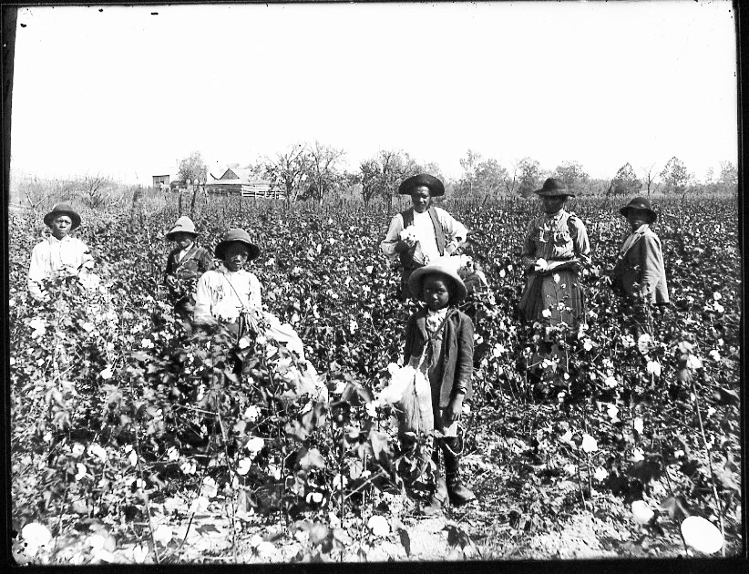

STORIES
VISUALS
ABOUT
Table of Conents

Past, Present, and Future Discrimination
Deck goes here
See More→
Drone Video
Deck goes here
See More→
History of Institutional racial discrimination
Deck goes here
See More→
Portraits of Persistence
See More→
Poetry
See More→
Will and Testament
Documentary
See More→